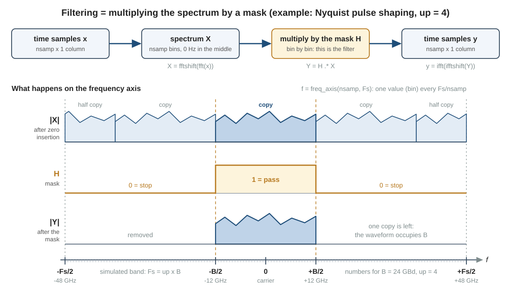
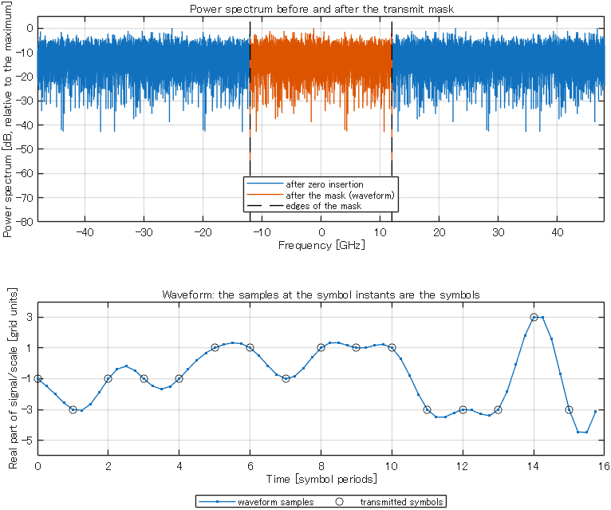

Background
13Waveforms, FFT and filters
In the practice chapters, a QAM signal had one sample per symbol. This page turns the symbols into a waveform with several samples per symbol. It shows how to look at the spectrum of a waveform, how every filter of this package works, and how the transmitter function TL_QAM builds a waveform whose bandwidth equals the symbol rate.
matlab/demos/demo13_waveform_fft_filter.mLibrary: TL_QAM, my_qammod, apply_filter, rcosfilter, nyquistfilter, freq_axis, plot_spectrum1. Why you need this
The proposed switch relies on a statement about frequencies: an unwanted signal on another wavelength, that is, at another optical frequency, lies outside the band of the receiver, and the receiver removes it (page 14, page 23). Other parts of the switch act on frequencies too: an arrayed-waveguide grating (AWG) passes only a band of frequencies (page 17), and the noise power of an optical amplifier grows with the bandwidth (page 15).
A signal with one sample per symbol cannot show any of this: the band of frequencies that such a simulation can represent is exactly as wide as the signal itself (section 2), with no room for a second wavelength channel (a signal on a neighboring wavelength) or for the edge of a filter. This page therefore provides three tools: a waveform with several samples per symbol, a frequency axis in Hz for its spectrum, and filters that act on the spectrum. Every script in main/ starts with the transmitter function of this page and filters with the method of this page.
A signal is a column of samples. Its spectrum is a column of the same length, with one value per frequency. A filter is a third column of the same length, with one factor per frequency. Filtering means multiplying the spectrum by these factors.
2. A waveform and its spectrum
The oversampling rate and the sampling rate
A transmitter sends \(B\) symbols per second. \(B\) is the symbol rate, also called the baud rate (baudrate in the code). It is 24 GBd in step21_two_stage_one_point and 32 GBd in step22_three_stage_one_point; 1 GBd (gigabaud) is \(10^{9}\) symbols per second. One symbol lasts for the symbol period \(1/B\).
A waveform is the signal as a function of time. The simulation stores it as samples that are closer together than the symbols. The number of samples per symbol is the oversampling rate (up in the code). The sampling rate \(F_s\) is the number of samples per second (Fs in the code; the comments call it the sampling frequency):
All scripts in main/ use up = 2 as their default. At 24 GBd this gives a sampling rate of 48 GHz: one symbol period is 41.7 ps, and two neighboring samples are 20.8 ps apart. A block of datasize symbols becomes a column vector with datasize*up samples.
The simulated band
The samples are the complex envelope that you know from the practice chapters. The frequency 0 Hz therefore stands for the optical carrier of the signal, and every other frequency is counted from the carrier. Samples that are \(1/F_s\) apart cannot tell a frequency \(f\) from the frequency \(f + F_s\). In the complex envelope, a frequency \(f\) is the oscillation \(e^{\,j2\pi f t}\), where \(t\) is the time. The oscillations of \(f\) and of \(f + F_s\) differ by the factor \(e^{\,j2\pi F_s t}\), and this factor is 1 at every sample, because \(F_s t\) is a whole number there. Both frequencies give exactly the same sample values. The samples can therefore describe only one frequency interval of the width \(F_s\). It is placed around the carrier:
This interval is the simulated band. Every signal that a script simulates must lie inside it: the target signal and, in some demos, a signal on a neighboring wavelength channel. A filter needs no such room. It is a mask on the simulated band and acts only where the signal is, so the center of its passband may lie outside the band (page 17). A larger up widens the simulated band. It also makes the run slower, because there are more samples. The default up = 2 of the scripts in main/ is enough, because all their signals are on the same wavelength and a simulated band of the width \(2B\) holds such a signal for every pulse shape of section 4; with up = 4, the bit error rate (BER) and the signal-to-noise ratio (SNR) are the same within the random error of one run. A script needs a larger up when a signal on another wavelength channel must fit into the simulated band (question 5 of section 7), or when a plot must show the waveform between the symbols, which is why the demo of this page uses up = 4.
The spectrum: fft and fftshift
The MATLAB function fft converts a block of \(n_{\mathrm{samp}}\) samples into \(n_{\mathrm{samp}}\) complex numbers. Each number gives the amplitude and the phase with which one frequency is present in the block. Together these numbers are the spectrum of the block, and each of them is called a bin. The \(n_{\mathrm{samp}}\) bins divide the simulated band of the width \(F_s\) into equal steps. The step between neighboring bins is the bin spacing
The demo of this page has 16000 samples at 96 GHz, so its bins are 6 MHz apart.
fft returns the bins in an order that is hard to read: 0 Hz comes first, then the positive frequencies, then the negative frequencies. fftshift reorders the bins so that the frequency rises from the first element to the last, with 0 Hz in the middle. ifftshift restores the order of fft; it is needed before the inverse transform ifft.
The library function freq_axis returns the frequency of every bin in Hz, in the order of fftshift(fft(x)). This line is from the demo:
f = freq_axis(nsamp, Fs); % frequency of every FFT bin [Hz], nsamp x 1For an even number of samples, f runs from \(-F_s/2\) to \(+F_s/2 - \Delta f\) in steps of \(\Delta f\), and 0 Hz is element number nsamp/2 + 1. The demo prints the two ends of its axis:
Simulated band : -48.000 GHz to +47.994 GHz (Fs = 96 GHz)The last bin is not at +48 GHz but 6 MHz below it. A bin at +48 GHz would be the same frequency as the bin at -48 GHz, by the argument that led to equation (2), and that bin is already the first element.
In the code: plot_spectrum
plot_spectrum(x, Fs) draws the power spectrum of a signal with these tools. x holds one signal per column, and Fs is the sampling rate in Hz. The core of the function is four lines:
N = size(x, 1); % number of samples
f = freq_axis(N, Fs); % exact FFT bin frequencies [Hz], N x 1
X = fftshift(fft(x, [], 1), 1); % spectrum of every column, 0 Hz in the middle
P = abs(X).^2; % power of every bin (arbitrary unit)The function then plots P in dB, relative to the strongest bin, against f in GHz. The arguments [], 1 and 1 tell fft and fftshift to work down each column, so a matrix gives one curve per signal.
Inside the library functions, the number of samples is called N. On these pages, \(N\) is the number of wavelength channels. This page therefore writes \(n_{\mathrm{samp}}\) for the number of samples, and the demo uses the variable nsamp.
| Quantity | Code | demo13 | step21 | step22 |
|---|---|---|---|---|
| Symbol rate | baudrate | 24 GBd | 24 GBd | 32 GBd |
| Oversampling rate | up | 4 | 2 | 2 |
| Sampling rate | Fs | 96 GHz | 48 GHz | 64 GHz |
| Simulated band | - | ±48 GHz | ±24 GHz | ±32 GHz |
| Number of symbols | datasize | 4000 | 30000 | 30000 |
| Number of samples | datasize*up | 16000 | 60000 | 60000 |
| Bin spacing | - | 6 MHz | 0.8 MHz | 1.067 MHz |
3. Filtering: multiply the spectrum by a mask
A filter changes how strongly each frequency is present in a signal. In this package, a filter is a column H with one real factor per bin, in the order of freq_axis. This column is called a mask. A factor 1 passes the bin unchanged, a factor 0 removes it, and a factor between 0 and 1 attenuates it.
Filtering then takes three steps (top row of Fig. 1): calculate the spectrum, multiply it by the mask bin by bin, and return to the time domain.

up = 4). After zero insertion, the spectrum |X| holds four copies of the spectrum of the symbols; the fourth copy is split into two halves at the edges of the simulated band. The mask H keeps one copy. The numbers are those of the demo (24 GBd).The library does this in apply_filter(dataIn, H, up). The three statements before the closing end of the function are the three steps:
% multiply the spectrum of every column by the mask
spectrum = fftshift(fft(expanded, [], 1), 1); % 0 Hz in the middle, like H
spectrum = H .* spectrum; % H (N x 1) acts on every column
signal = ifft(ifftshift(spectrum, 1), [], 1); % back to the time domainWith up = 1, the variable expanded is the input signal itself, and the function only filters. With a larger up it first inserts zeros (section 4). The mask must be a column with as many elements as the output has samples: the number of rows of dataIn times up. Otherwise apply_filter stops with an error.
The masks come from three library functions (Table 2). All three take their frequency axis from freq_axis, so a mask and a spectrum of the same length line up bin by bin. All frequencies and widths are given in Hz.
| Function | Shape of the mask | Used for | Explained on |
|---|---|---|---|
rcosfilter(N, Br, fsam, rolloff) | Raised cosine around 0 Hz; for rolloff = 0 a rectangle of the width Br | Pulse shaping in the transmitter | section 4 |
nyquistfilter(data_length, center_fleq, Fs, width) | Rectangle around the frequency center_fleq with the width width | Receive filter of the coherent receiver | page 14 |
gaussfilter(N, shift, Fs, FWHM, er_dB, m) | Gaussian around the frequency shift | Passband of the AWG (the function awg calls it) | page 17 |
For example, the receiver in step21_two_stage_one_point filters the signal with these two lines:
H = nyquistfilter(length(signal), 0, Fs, baudrate*(1+rolloff));
signal = apply_filter(signal, H, 1);A rectangular mask of the width \(w\) around 0 Hz passes the bins with \(-w/2 \le f \lt +w/2\). The bin on the lower edge passes, and the bin on the upper edge does not. Section 4 gives the reason. With this rule, rcosfilter(N, Br, fsam, 0) and nyquistfilter(N, 0, fsam, Br) return the same mask.
The FFT treats the block of samples as one period of a signal that repeats without end, so every filter is circular: the part of a pulse that a filter pushes beyond the end of the block comes back at its beginning.
4. Nyquist pulse shaping
Pulse shaping turns datasize symbols into a waveform of datasize*up samples. It has two goals. The waveform should occupy as little bandwidth as possible, and the receiver must be able to read every symbol without a disturbance from the other symbols. The call apply_filter(data_mod, H, up) reaches both goals in two steps.
- Zero insertion. The \(m\)-th symbol \(d_m\) is written to sample \(1 + (m-1)\,\mathrm{up}\), and the
up - 1samples after it are set to zero. In the code this is the lineexpanded(1:up:end, :) = dataIn;. The result has the right number of samples, but its spectrum fills the whole simulated band: the spectrum of the symbols repeats every \(B\),uptimes in total (row \(|X|\) of Fig. 1). The reason is the argument of section 2 with another spacing: the samples that are not zero are \(1/B\) apart, so they cannot tell \(f\) from \(f + B\). - Mask. A rectangular mask of the width \(B\) keeps one of these copies and removes the others (rows \(H\) and \(|Y|\) of Fig. 1).
The waveform now occupies exactly the bandwidth \(B\). The mask passes datasize bins, one bin per symbol. A narrower mask would lose information, because datasize independent symbols cannot be described by fewer than datasize numbers.
In the time domain, each symbol has become a pulse that is spread over many symbol periods. A symbol instant is a sample with the number \(1 + (m-1)\,\mathrm{up}\): the sample that received the symbol \(d_m\) in step 1. The pulse of a symbol is exactly zero at the symbol instants of all other symbols. At a symbol instant, the waveform \(y\) therefore contains only the one symbol \(d_m\):
A contribution of other symbols at a symbol instant is called inter-symbol interference (ISI). Equation (4) says that there is none. A pulse with this property is called a Nyquist pulse.
The reason is again the repetition of the spectrum. Before the mask, the samples at the symbol instants are the symbols \(d_m\) themselves. The spectrum consists of up copies. The symbol instants are \(1/B\) apart, so the copies, which are \(B\) apart, all give the same values there. All copies together give \(d_m\), so one copy alone gives \(d_m/\mathrm{up}\). The mask keeps exactly one copy, and this is equation (4). apply_filter does not rescale the amplitude; the transmitter sets the power afterwards (section 5). Between the symbol instants, the pulses of neighboring symbols overlap, and the waveform takes other values (lower plot of Fig. 2).
The edge rule of section 3 belongs to this result. The bins at \(-B/2\) and \(+B/2\) are \(B\) apart, so they hold the same value after zero insertion. Exactly one of them must pass. Then the mask keeps exactly one full copy, that is one bin per symbol, and equation (4) holds exactly.
Roll-off
The rectangle is the limiting case of a family of masks. The roll-off factor \(\alpha\) (rolloff in the code, from 0 to 1) replaces the two sharp edges by slopes with the shape of a cosine. This is the raised-cosine mask of rcosfilter:
The waveform then occupies the bandwidth \((1+\alpha)B\). Equation (4) still holds. On a slope, the mask removes a part of one copy, but it passes exactly this part of the neighboring copy, because \(H(f) + H(f - B) = 1\) there. The only condition is that up is 2 or more, so that the mask fits into the simulated band. For \(\alpha = 0\) the mask is the rectangle of this section. All scripts in main/ and all demos use a roll-off of 0. A note in section 1 of step21_two_stage_one_point and of step22_three_stage_one_point advises you to keep this value unless you study the roll-off itself: with a roll-off above 0, these scripts skip their second self-check, the comparison with the SNR budget (page 21).
A roll-off of 0 is an idealization. The pulse of one symbol does not end: it is spread over the whole block, and only the circular block of section 3 makes this possible. A real transmitter can only approximate a rectangular spectrum.
In the code: rcosfilter
Every script in main/ builds the transmit mask once, in its section 2:
Hrcos = rcosfilter(datasize*up, baudrate, Fs, rolloff); % transmit mask (Nyquist)The four inputs are the number of samples, the symbol rate in Hz, the sampling rate in Hz and the roll-off factor. The output is the mask: a column of datasize*up values between 0 and 1. rcosfilter only builds the mask. The transmitter function of the next section applies it.
5. The transmitter function TL_QAM
TL_QAM makes the waveform of one transmitter: one polarization of one wavelength channel (page 14 explains the two polarizations and the IQ modulator). In the model it stands for the laser and the IQ modulator (TL = tunable laser).
[signal, data, data_mod] = TL_QAM(datasize, up, H, Pin, bitsPerSymbol)| Name | Meaning | Size and unit |
|---|---|---|
datasize | Number of symbols | scalar |
up | Oversampling rate (samples per symbol) | scalar |
H | Pulse-shaping mask made by rcosfilter | (datasize*up) x 1 |
Pin | Mean optical power of the output signal | scalar, dBm |
bitsPerSymbol | Bits per symbol: 2, 4, 5 or 6 | scalar |
signal | Output: optical field of one polarization | (datasize*up) x 1, sqrt(W) |
data | Output: transmitted bits (0 or 1) | (datasize*bitsPerSymbol) x 1 |
data_mod | Output: transmitted QAM symbols | datasize x 1 |
The function works in five steps. The code lines are copied from lib/TL_QAM.m.
- Random bits.
data = randi([0 1], datasize*bitsPerSymbol, 1);The bits of one symbol follow each other. - Bits to symbol numbers. Each group of
bitsPerSymbolbits is read as a binary number, with the first bit as the most significant bit. For 16QAM, the bits 0 1 0 0 give the symbol number 0·8 + 1·4 + 0·2 + 0·1 = 4. - Symbol numbers to constellation points.
data_mod = my_qammod(sym_num, 2^bitsPerSymbol);The functionmy_qammodreturns the points on the grid of odd integers (Table 4). Symbol number 4 of 16QAM is the point -1 + 3i. - Pulse shaping.
signal = apply_filter(data_mod, H, up);This is the zero insertion and the mask of section 4. - Power.
signal = set_signal_power(signal, Pin);This call scales the waveform so that its mean power isPin(page 12). From here on, the samples are an optical field in sqrt(W).
Modulation formats and mod_flag
The scripts select the modulation format with the variable mod_flag, the number of bits per symbol (\(k\) on these pages). They pass it to TL_QAM as the input bitsPerSymbol. The number of constellation points is \(2^k\) (Mary = 2^mod_flag in the scripts).
mod_flag | Format | Points | Levels on each axis | Mean power of the points |
|---|---|---|---|---|
| 2 | QPSK | 4 | -1, +1 | 2 |
| 4 | 16QAM | 16 | -3, -1, +1, +3 | 10 |
| 5 | 32QAM | 32 | -5, -3, -1, +1, +3, +5 | 20 |
| 6 | 64QAM | 64 | -7, -5, -3, -1, +1, +3, +5, +7 | 42 |
The points are not normalized: in the practice chapters the mean symbol energy was 1, and here it is the value in Table 4. This is why step 5 sets the power at the end. On this page, one unit of the grid is the number 1 in Table 4; neighboring points are 2 units apart. For a roll-off of 0, the samples at the symbol instants have the same mean power as the whole waveform. With Pin = 0 dBm (1 mW) and 16QAM, the mean power 10 of the points therefore corresponds to 1 mW, and one unit of the grid corresponds to \(\sqrt{1\ \mathrm{mW}/10} = 0.01\ \sqrt{\mathrm{W}}\). The square formats (QPSK, 16QAM, 64QAM) use Gray mapping: neighboring levels differ in only one bit, so the most likely symbol error, a decision for a neighboring point, causes only one bit error. The default format is 16QAM in step22_three_stage_one_point and in the demo of this page, and 32QAM in step21_two_stage_one_point.
The 32QAM cross constellation
A square constellation gives half of the bits to the real part and half to the imaginary part. The 5 bits of 32QAM cannot be divided in this way. 32QAM therefore uses a cross: a square of 6 x 6 points without its four corners (36 - 4 = 32). The corners are the four points that would have the highest power.
Im
+5 . o o o o .
+3 o o o o o o
+1 o o o o o o
-1 o o o o o o
-3 o o o o o o
-5 . o o o o .
-5 -3 -1 +1 +3 +5 Re
o = constellation point . = corner that is not usedA cross has no short mapping rule. my_qammod therefore contains the 32 points as a table, in the order of qammod, a function of the Communications Toolbox of MATLAB. This package does not need the toolbox.
How the scripts call TL_QAM
These two lines are from block [1] of step22_three_stage_one_point:
pin = PTx - 3*pol_flag; % power of the simulated polarization [dBm]
[signal, data, data_mod] = TL_QAM(datasize, up, Hrcos, pin, mod_flag);Page 14 explains the first line. The header of TL_QAM gives three rules for the second line:
- Every call makes new, independent random data. Call the function once for the target signal and once for every interfering signal.
- The bits come from
randi. Callrng(seed)before, and a run can be repeated. - Keep
dataanddata_modof the target signal for the receiver:data_modtrains the equalizer, anddatais compared with the received bits (page 14).
6. Run the demo
In MATLAB, make the folder matlab the current folder and run setup_path (once per MATLAB session). Then run demo13_waveform_fft_filter. The script needs a few seconds. It prints three lines that begin with Self-check, and each of them must contain passed.
Open the script in the editor and read it next to Table 5. The section numbers are the numbers of the %% sections of the script.
| Section | What it does | Self-check |
|---|---|---|
| 1 | Sets the example: datasize = 4000, mod_flag = 4 (16QAM), up = 4, baudrate = 24e9, rolloff = 0, pin = 0. | none |
| 2 | Calculates Fs, the number of samples nsamp, the bin spacing df and the frequency axis f (equations (1) to (3)). Prints the two ends of the simulated band. | none |
| 3 | Builds the transmit mask with rcosfilter and calls TL_QAM. Prints the numbers of bits, symbols and samples, the bits and the point of the first symbol, and the mean power of the waveform. | none |
| 4 | Repeats the pulse shaping by hand: zero insertion, fftshift(fft(expanded)), multiplication by the mask, ifft(ifftshift(Y)), then set_signal_power. These are the steps of Fig. 1. | 1: the result is equal to the output of TL_QAM. |
| 5 | Takes the samples at the symbol instants (one sample in up) and divides them by scale, the size of one unit of the grid in sqrt(W). Prints the first three symbols next to these samples. | 2: the samples at the symbol instants are the transmitted symbols; the largest error is below \(10^{-9}\) (equation (4)). |
| 6 | Calculates the spectrum of the waveform and counts the bins that carry power. | 3: the number of these bins times the bin spacing is baudrate*(1 + rolloff), within 2 bins. |
| 7 | Draws one figure with two plots. Top: plot_spectrum of the signal before and after the mask. Bottom: the waveform of the first 16 symbols, with the transmitted symbols as circles. | none |
The script prints this text:
Samples : 4000 symbols x 4 samples per symbol = 16000 samples
Simulated band : -48.000 GHz to +47.994 GHz (Fs = 96 GHz)
Bin spacing : Fs/nsamp = 6.000 MHz
Transmitter : 16000 bits -> 4000 symbols (16-QAM) -> 16000 samples
First symbol : bits 0 1 0 0 -> point -1+3i
Mean power : 1.0000 mW (pin = 0.0 dBm)
Self-check 1 passed: pulse shaping by hand = TL_QAM (difference 0.0e+00)
Symbol instants : transmitted symbol -> sample/scale (scale = 1.0055e-02)
symbol 1 : -1+3i -> -1.000000000+3.000000000i
symbol 2 : -3+3i -> -3.000000000+3.000000000i
symbol 3 : -1+1i -> -1.000000000+1.000000000i
Self-check 2 passed: samples at the symbol instants = symbols (largest error 3.0e-14)
Occupied band : -12.000 GHz to +11.994 GHz
Occupied width : 4000 bins x 6.000 MHz = 24.000 GHz
Self-check 3 passed: occupied width = baudrate*(1 + rolloff) = 24.000 GHz (within 2 bins)Note three details of this output. The value of scale is 1.0055e-02 and not the 0.01 of section 5, because the 4000 random symbols of this run have a mean power of 9.89 instead of 10, and \(\sqrt{1\ \mathrm{mW}/9.89}\) = 1.0055e-02 sqrt(W). The occupied band ends at +11.994 GHz: the bin at +12 GHz does not pass (section 4). The largest error of self-check 2 is a rounding error; its last digits can differ on another computer.

demo13_waveform_fft_filter. Top: the power spectrum after zero insertion (blue) and after the mask (orange); the dashed lines are the edges of the mask. The spectrum of random data is not smooth: each bin varies by several dB. Between the dashed lines the orange curve covers the blue one. The blue curve repeats every 24 GHz: the pair of deep notches near +4.2 GHz appears again near -43.8 GHz, -19.8 GHz and +28.2 GHz. Bottom: the real part of the waveform in units of the grid. At the symbol instants (circles) the waveform equals the transmitted symbols. Between them it takes other values.- All three self-checks print
passed, and your figure looks like Fig. 2. - You can calculate the first three printed lines by hand from
datasize,upandbaudrate. - In section 4 of the script, you can say which line is the filter and what each of the other lines does.
Change one parameter in section 1 of the script, predict the result, and then run the script. Set the parameter back before the next experiment.
- Set
up = 8, thenup = 2. PredictFs, the simulated band, the number of samples and the bin spacing. Which printed lines do not change? - Set
mod_flag = 6, thenmod_flag = 5. Predict the number of bits and, with Table 4, the value ofscale. Read the levels of the circles in the lower plot. - Set
rolloff = 0.2. Look at the edges of the orange spectrum and at the printed occupied width. Does self-check 2 still pass?
What you should see
up = 8: Fs = 192 GHz, band from -96.000 GHz to +95.994 GHz, 32000 samples.up = 2: Fs = 48 GHz, band from -24.000 GHz to +23.994 GHz, 8000 samples. The bin spacing stays at 6.000 MHz, becauseFsand the number of samples change by the same factor. The printed symbols,scaleand the occupied band do not change either: the waveform is the same signal, sampled more or less densely. The blue spectrum holds 8 or 2 copies. Withup = 2, the value of the scripts inmain/, the lower plot has only one sample between two symbol instants.mod_flag = 6: 24000 bits, levels up to ±7 (the first 16 symbols of this run use the levels from -7 to +3),scale= 4.9044e-03 (prediction \(\sqrt{10^{-3}/42}\) = 4.88e-03).mod_flag = 5: 20000 bits, levels up to ±5,scale= 7.1469e-03 (prediction \(\sqrt{10^{-3}/20}\) = 7.07e-03). The printed values differ slightly from the predictions, because the random symbols do not have exactly the mean power of Table 4. The spectrum keeps its width: the bandwidth depends on the symbol rate, not on the format.- The edges of the orange spectrum become slopes. The script prints 4799 bins x 6.000 MHz = 28.794 GHz, which is \((1+\alpha)B\) = 28.8 GHz within one bin. Self-check 2 still passes: a raised-cosine mask causes no ISI. The value of
scalerises to 1.0329e-02: with a roll-off above 0, the mean power of the whole waveform is lower than the mean power of the samples at the symbol instants (here by about 5 %), so the samepingives larger samples at the symbol instants.
7. Check your understanding
- You run
step22_three_stage_one_point(baudrate = 32e9,datasize = 3e4) withup = 5instead of 2. Calculate the sampling rate, the simulated band, the number of samples and the bin spacing.Answer
\(F_s\) = 5 × 32 GHz = 160 GHz. The simulated band reaches from -80 GHz to +80 GHz. The number of samples is 30000 × 5 = 150000. The bin spacing is 160 GHz / 150000 = 1.067 MHz.
- In the demo of this page, the bin spacing stays at 6 MHz when you change
up. Show this with equations (1) and (3). Which parameter do you change to get a bin spacing of 3 MHz?Answer
\(\Delta f = F_s / n_{\mathrm{samp}} = (\mathrm{up} \times B) / (\mathrm{datasize} \times \mathrm{up}) = B / \mathrm{datasize}\). The bin spacing does not depend on
up. It is 24 GHz / 4000 = 6 MHz. Withdatasize = 8000it is 24 GHz / 8000 = 3 MHz: a longer block gives a finer frequency axis. step21_two_stage_one_pointusesdatasize = 3e4,up = 2,baudrate = 24e9androlloff = 0. How many bins does its transmit maskHrcospass? What are the lowest and the highest frequency that pass?Answer
The mask passes one bin per symbol: 30000 of the 60000 bins. The bin spacing is 48 GHz / 60000 = 0.8 MHz. The lowest bin that passes is at -12 GHz. The highest is one bin below +12 GHz, at +11.9992 GHz, because the bin at +12 GHz holds the same value as the bin at -12 GHz and only one of the two may pass.
- With its default values
PTx = -4andpol_flag = 1,step21_two_stage_one_pointcallsTL_QAMwithpin = -7(dBm) andmod_flag = 5. How large is one unit of the grid in sqrt(W)? What is the magnitude of the field at an instant where the symbol is 5 + 3i?Answer
-7 dBm is 0.1995 mW. The mean power of the 32QAM points is 20 (Table 4), so one unit of the grid is \(\sqrt{0.1995 \times 10^{-3}\ \mathrm{W} / 20}\) = 3.16e-03 sqrt(W). The point 5 + 3i has the magnitude \(\sqrt{34}\) = 5.83 units, which is 1.84e-02 sqrt(W). In a run, the value differs slightly, because the random symbols do not have exactly the mean power 20.
- A second 32-GBd signal is placed 50 GHz above the carrier, like a neighboring wavelength channel. Which frequencies does it occupy? Does it fit into the simulated band with
up = 2? Withup = 4? Withup = 5?Answer
It occupies 50 GHz ± 16 GHz, that is 34 GHz to 66 GHz. With
up = 2the simulated band ends at +32 GHz, below the lowest frequency of this signal, so no part of it fits. Withup = 4the simulated band ends at +64 GHz, so the signal still does not fit: the part above +64 GHz would come back at the other end of the band. Withup = 5the band ends at +80 GHz, and the signal fits. The general rule is \(F_s \ge 2\,(f_{\mathrm{off}} + B/2)\), here 160 GHz ≥ 132 GHz. For this reason the demos of pages 14 and 16 useup = 5.
A signal in this package is a column with up samples per symbol (the oversampling rate), inside a simulated band of the width \(F_s = \mathrm{up} \times B\) around its carrier, and every filter is a mask that multiplies its spectrum. With a roll-off of 0, the transmitted waveform occupies exactly the bandwidth \(B\), and its samples at the symbol instants (one sample in up) are the symbols, multiplied by one common factor. Page 14 uses the same mask at the receiver: it keeps this band and removes everything outside it.